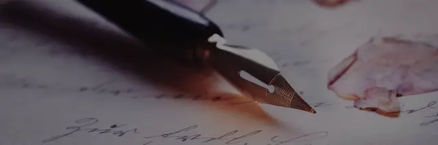
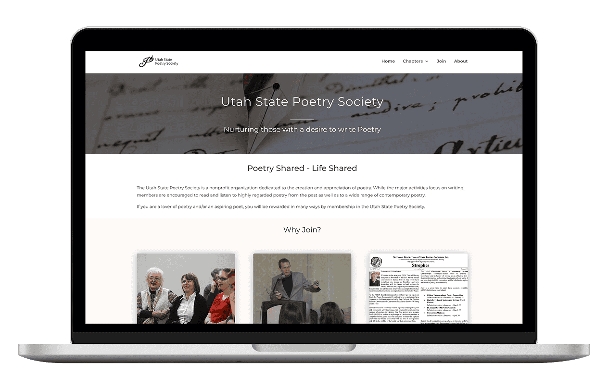
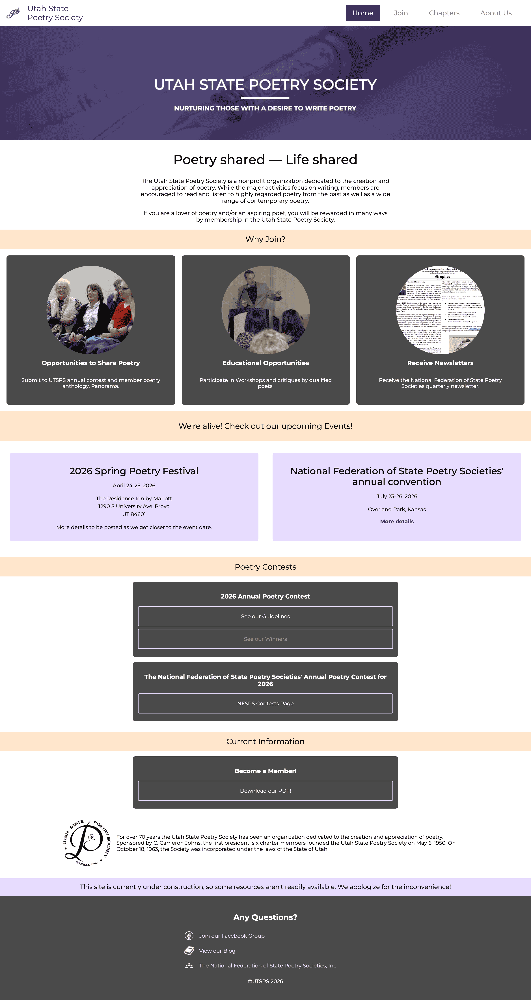
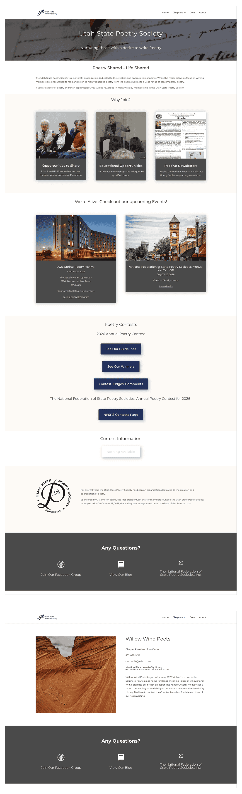
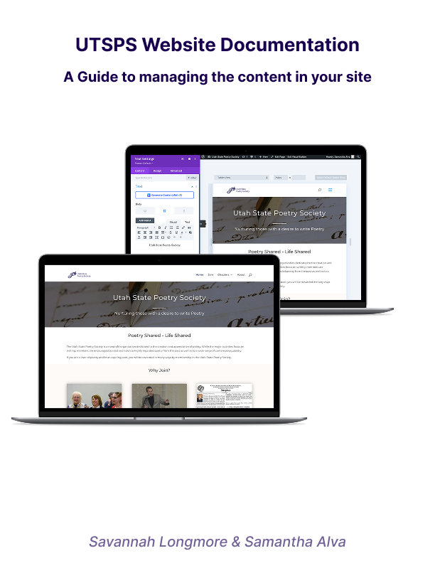
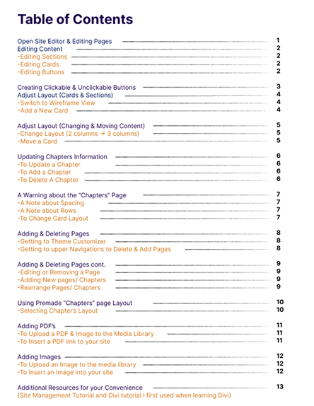
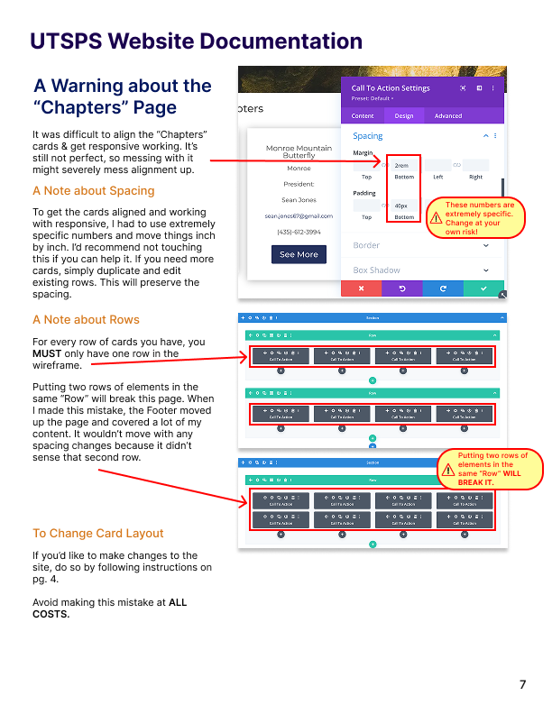
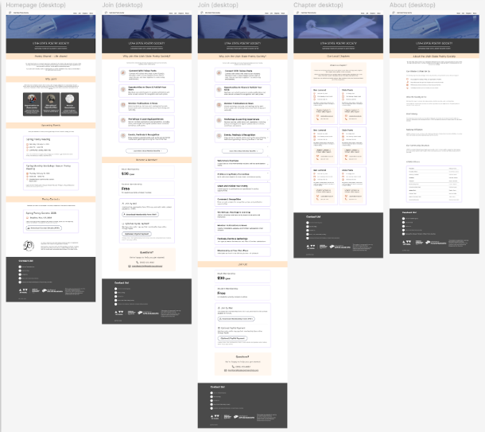
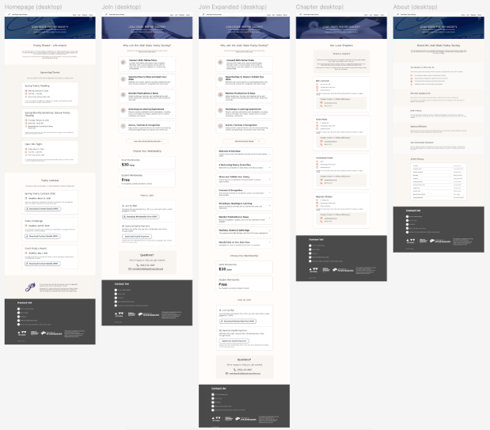

Utah Poetry Society: Pitfalls & Pivots
A Case Study

Project Overview
In Fall of 2025, I worked with a client for the first time for the UVU Bookstore redesign.
So
when I heard I’d be designing for a client again, I thought it would be easy. Some parts of
it were. However, I had to learn a lot to make this project work, and there were some
curveballs I could have avoided.
Paul is the president of the Utah State Poetry Society, and his webpage went completely
down due to an overloaded server. Me and my friend Savannah were the team tasked with
putting his site back up. We worked on this throughout the Spring of 2026 semester, and came
out with a product we could all be satisfied with.

Getting ahead of myself
When I heard, “building a website from the ground up”, I immediately concluded the site
would be hand coded, and I’d be the one doing it. We had an initial Zoom call with Paul and
our professor to have a project brief. Thankfully, there was an old design of the site on
the internet, and Paul used it to illustrate his vision. There were some pages he didn’t
want anymore, as it would be too much work for the site manager. He also wanted cards to be
editable and content to be removed. After this, I was eager to jump into coding. So we
wrote it into our schedule and got to work.
Here’s the thing: We already knew Paul wanted to use Wordpress. We had been emailing back
and forth by this point, but because none of us knew how Wordpress worked, I decided I’d
code now, figure it out later. And throughout the first two weeks of the semester, while
Savannah mocked up designs in Figma, that’s what I did.
I had a feeling this wasn’t the way to go, but I intentionally ignored it. I thought my
homepage looked tacky: the odd coloration, blocky elements, and outdated feeling all
contributed to my growing guilt. I hadn’t even touched Wordpress, yet I had a full homepage.
Instead of course correcting sooner, I simply assumed I could integrate my work into
Wordpress.

A Different Format
Because our class met twice a week to discuss progress, our professor caught on to our
pitfall and told us we needed to change our approach. By this point, I put roughly 10 hours
into my hand coded site, so I was slightly let down. But I wasn’t surprised. Implementation
with Wordpress turned out to be almost impossible. Thankfully, my hand coded site served as
a nice placeholder while me and Savannah started the actual work. We kept Paul in the loop
the entire time, and made sure to explain our reasoning for every decision. Thankfully, Paul
was patient with us, and didn’t mind the course-correct.
While Savannah was in charge of designing, I was delving into Wordpress. I watched some
tutorials, struggled with the default Wordpress builder, and turned to Divi (recommended by
my professor). It’s a plugin with advanced design options and an intuitive interface. I
found a 2 hour long tutorial by Ferdy Korpershoek on Youtube, and hunkered down in the UVU
library to work. It was difficult to learn, but over time, designing became easier. It took
me a few hours to knock out the homepage, but every page after took significantly less time.
Within a few weeks, we had something tangible.
With Savannah’s help, the design took a modern, sleek twist. She experimented with Figjam to
make iterations in rapid succession, and took what she liked best from each draft. We
discussed her wireframes and implemented her styling into the site. I’m extremely thankful I
was working with her. She has a background in Graphic Design, so her design decisions were
informed, pleasing to the eye, and an absolute game-changer for the site.

Passing the Baton
Early on, Paul explained that a site manager would take over to update the content. However,
they would be older in age, so technology wouldn’t come easily. Me and Savannah decided to
write and record a pass-off document. While she was designing it, I tweaked the site to
Pauls’ liking (he had a lot of feedback), and started thinking towards a recorded video.
By finals week, he was satisfied with the site, so I was helping Savannah finalize the
document. We worked async, and had Teams calls to work together in Figma. Because the
document covered site editing, Savannah needed my input to understand how everything worked.
She wanted to understand Divi so she’d make a throw-away page and experiment while we
collaborated.
Once this was done, I used the document as a video outline. I recorded my screen to
illustrate how to do every task. Because the site manager would only be editing content
(Paul made that very clear), that was our focus. We documented things like adding pages,
moving and editing text, inserting photos, and getting into the editor in the first place.
We had a teams meeting with Paul and our professor around this time, where he asked
questions about the site and we answered them in real time. Using his questions to add any
missing pieces to the pass-off document, I then recorded a video that spanned 30 minutes,
and we wrapped everything up for a final email.



My Discoveries
As I’ve worked through schooling, I’ve discovered my strengths, along with my weaknesses.
One such strength is my passion, but this also doubles as a weakness. I’m impulsive,
excitable, and quick to jump the gun. As such, pivots have been common in my past work, and
I often put time into something that never sees the light of day. This project helped me
take a step back, slow down, and learn something new. It forced me out of my comfort zone,
but also showed me that my hand coding work had a purpose. It served as a good placeholder
for the site, as Paul needed something out fast to show that UTSPS was still alive.
Along with this, me and Savannah also became more familiar with client communication. Paul
had a lot of feedback - he was always checking our Wordpress site and emailing us. Because
of Paul’s deep involvement in our project, we developed a professional voice, clear
reasoning, and boundaries while talking to him. He was a fantastic client to work with.
I’d definitely consider this project successful. Savannah and I learned a lot, and we
created something that Paul was happy with. I truly believe our passion for the craft showed
through the work. I’m also thankful to Paul and our professor. Without their contributions,
advice, and feedback, this site wouldn’t be where it was. Collaboration is a necessity for
our industry, and this project really reinforced that outlook for me.

